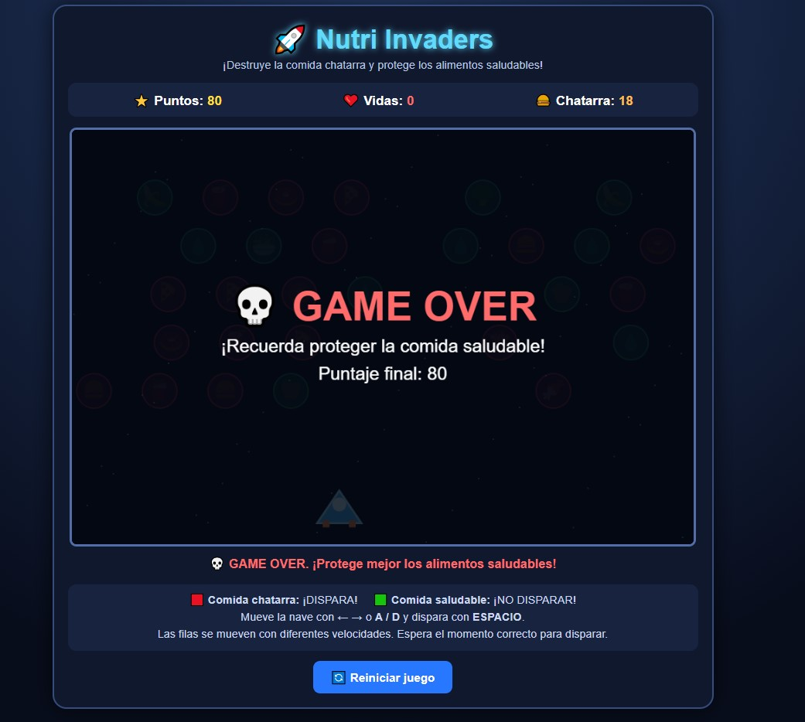

Nutri Invaders
Protege los alimentos saludables y elimina la comida chatarra
Descripcion
Nutri Invaders es un videojuego arcade educativo en el que el jugador controla una nave espacial y debe destruir la comida chatarra mientras protege los alimentos saludables.
Los alimentos se desplazan horizontalmente en diferentes filas. El jugador debe observarlos, identificar cuáles son poco saludables y disparar únicamente contra ellos.
El proyecto combina una mecánica clásica de disparos con contenidos educativos relacionados con nutrición y alimentación saludable.
Idea del proyecto
La idea principal de Nutri Invaders es enseñar a diferenciar entre alimentos saludables y comida chatarra mediante una experiencia interactiva.
En lugar de responder preguntas directamente, el jugador aprende tomando decisiones durante la partida mediante disparos selectivos, observación y retroalimentación constante.
Objetivo del jugador
El objetivo es destruir toda la comida chatarra que aparece en la pantalla sin perder las tres vidas disponibles.
- Mover la nave horizontalmente.
- Observar los alimentos en movimiento.
- Identificar la comida chatarra.
- Disparar con precisión y evitar destruir alimentos saludables.
Genero
- Arcade educativo.
- Shooter 2D.
- Juego de clasificación.
- Inspirado en mecánicas clásicas de invasores espaciales.
Mecanica principal y Sistema de Vidas
El jugador controla una nave espacial azul ubicada en la parte inferior de la pantalla mientras los alimentos se desplazan por filas superiores.
Consecuencias al disparar:
- Comida chatarra destruida: +10 puntos, el alimento desaparece y disminuye el contador restante.
- Alimento saludable destruido: -1 vida, aparece una advertencia y la partida termina si las vidas llegan a cero.
Vidas iniciales: 3 vidas.
Controles
Mover la nave a la izquierda
Mover la nave a la derecha
Disparar proyectil
Nota: También incluye botones integrados en pantalla para dispositivos táctiles.
Clasificación de Alimentos
Alimentos saludables (Deben protegerse)
Manzana, brócoli, zanahoria, banana, ensalada, agua.
Comida chatarra (Deben destruirse)
Hamburguesa, papas fritas, dona, pizza, chocolate, dulces, gaseosa.
Condiciones de Partida
Condición de victoria: Eliminar toda la comida chatarra presente en la pantalla (Pantalla: ¡GANASTE!).
Condición de derrota: Destruir tres alimentos saludables y quedarse sin vidas (Pantalla: GAME OVER).
Capturas de pantalla

Momento de gameplay y acciones

Pantalla final de resultados
Tecnologías utilizadas
- HTML5, CSS3, JavaScript y Canvas 2D.
- Diseño web adaptable y ejecución directa en navegadores modernos.
- Control de versiones y publicación mediante GitHub.
Uso de Inteligencia Artificial y Aporte Personal
Apoyo de IA: Herramienta empleada para estruturar el prototipo inicial mediante prompts definiendo el género arcade, mecánicas de movimiento, control de disparos y reglas de nutrición.
Aporte personal: Revisión de requisitos, evaluación de la temática educativa, comprobación de controles y disparos, pruebas del sistema de vidas y documentación del proyecto.
Aprendizajes y Mejoras Futuras
Aprendizajes: Combinación de mecánicas arcade con objetivos educativos, manejo de colisiones, gestión de Canvas 2D y estructuración de bucles de juego.
Mejoras futuras: Pantallas de inicio y pausa independientes, efectos de sonido y música, información nutricional detallada, niveles de dificultad y optimización de controles táctiles.